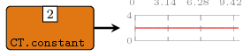
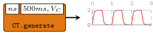
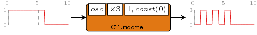
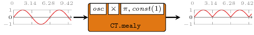

| Copyright | (c) George Ungureanu 2016-2018 |
|---|---|
| License | BSD-style (see the file LICENSE) |
| Maintainer | ugeorge@kth.se |
| Stability | experimental |
| Portability | portable |
| Safe Haskell | Safe |
| Language | Haskell2010 |
| Extensions | PostfixOperators |
ForSyDe.Atom.MoC.CT
Description
The CT library implements a DSL of atoms that operate according to a plactical
interpretation of the continuous time model of computation, along with helpers and
associated patterns.
This interpretation of the CT MoC is an extension of the DE
MoC in the sense that it borrow its algebra of discrete interactions
entirely. However, there is one major difference:
- in
DEsignals carry values of an \(\alpha\) type, which is conveniently describing persistent values between two (consecutive) discrete events; - in
CTsignals instead carry functions of type \(\tau\rightarrow\alpha\) which evolve in time.
The type \(\tau\) is an arbitrary (yet appropriate) numerical representation for
continuous time (e.g. see the in-built Time alias). By
abstracting the time away from signals and keeping it as an (arbitrary) argument, a
ForSyDe-Atom CT process network is able to describe and manipulate symbolic (pure)
continuous functions, the numerical representation becoming apparent only when the
output is forced to be evaluated at discrete points in time, e.g. for the purpose
of plotting. Hence this CT MoC DSL is describing "an algebra of discrete
interactions between continuous sub-signals". For more information, please consult
[Ungureanu18].
Useful pointers:
- ForSyDe.Atom contains general guidelines for using the API
- ForSyDe.Atom.MoC documents details about the internals of the MoC layer, the atoms and the basic structure of all process constructors as MoC patterns.
- ForSyDe.Atom.Utility.Plot contains useful utilities for sampling and plotting CT signals.
- ForSyDe.Atom.MoC.DE is the "host" DSL for the CT MoC, inferring the semantics of discrete interactions.
- the naming convention rules on how to interpret the function names based on their number of inputs and outputs.
Synopsis
- type TimeStamp = DiffTime
- type Time = Rational
- data CT timestamp time a where
- type SignalBase timestamp time a = Stream (CT timestamp time a)
- type Signal a = SignalBase TimeStamp Time a
- unit2 :: (Num ts, Num tm, Ord ts) => ((ts, tm -> a1), (ts, tm -> a2)) -> (SignalBase ts tm a1, SignalBase ts tm a2)
- infinite :: (Num ts, Num tm, Ord ts) => (tm -> a) -> SignalBase ts tm a
- signal :: (Num ts, Num tm, Ord ts) => [(ts, tm -> a)] -> SignalBase ts tm a
- checkSignal :: (Num timestamp, Ord timestamp) => Stream (CT timestamp time a) -> Stream (CT timestamp time a)
- delay :: (Num ts, Real ts, Ord ts, Eq ts, Num tm, Fractional tm, Ord tm) => ts -> (tm -> a) -> SignalBase ts tm a -> SignalBase ts tm a
- delay' :: (Num ts, Real ts, Ord ts, Eq ts, Num tm, Fractional tm, Ord tm) => SignalBase ts tm a -> SignalBase ts tm a -> SignalBase ts tm a
- comb22 :: (Num ts, Real ts, Ord ts, Eq ts, Num tm, Fractional tm, Ord tm) => (a1 -> a2 -> (b1, b2)) -> SignalBase ts tm a1 -> SignalBase ts tm a2 -> (SignalBase ts tm b1, SignalBase ts tm b2)
- reconfig22 :: (Num ts, Real ts, Ord ts, Eq ts, Num tm, Fractional tm, Ord tm) => SignalBase ts tm (a1 -> a2 -> (b1, b2)) -> SignalBase ts tm a1 -> SignalBase ts tm a2 -> (SignalBase ts tm b1, SignalBase ts tm b2)
- constant2 :: (Num ts, Real ts, Ord ts, Eq ts, Num tm, Fractional tm, Ord tm) => (b1, b2) -> (SignalBase ts tm b1, SignalBase ts tm b2)
- infinite2 :: (Num ts, Real ts, Ord ts, Eq ts, Num tm, Fractional tm, Ord tm) => (tm -> b1, tm -> b2) -> (SignalBase ts tm b1, SignalBase ts tm b2)
- generate2 :: (Num ts, Real ts, Ord ts, Eq ts, Num tm, Fractional tm, Ord tm) => (b1 -> b2 -> (b1, b2)) -> ((ts, tm -> b1), (ts, tm -> b2)) -> (SignalBase ts tm b1, SignalBase ts tm b2)
- stated22 :: (Num ts, Real ts, Ord ts, Eq ts, Num tm, Fractional tm, Ord tm) => (b1 -> b2 -> a1 -> a2 -> (b1, b2)) -> ((ts, tm -> b1), (ts, tm -> b2)) -> SignalBase ts tm a1 -> SignalBase ts tm a2 -> (SignalBase ts tm b1, SignalBase ts tm b2)
- state22 :: (Num ts, Real ts, Ord ts, Eq ts, Num tm, Fractional tm, Ord tm) => (b1 -> b2 -> a1 -> a2 -> (b1, b2)) -> ((ts, tm -> b1), (ts, tm -> b2)) -> SignalBase ts tm a1 -> SignalBase ts tm a2 -> (SignalBase ts tm b1, SignalBase ts tm b2)
- moore22 :: (Num ts, Real ts, Ord ts, Eq ts, Num tm, Fractional tm, Ord tm) => (st -> a1 -> a2 -> st) -> (st -> (b1, b2)) -> (ts, tm -> st) -> SignalBase ts tm a1 -> SignalBase ts tm a2 -> (SignalBase ts tm b1, SignalBase ts tm b2)
- mealy22 :: (Num ts, Real ts, Ord ts, Eq ts, Num tm, Fractional tm, Ord tm) => (st -> a1 -> a2 -> st) -> (st -> a1 -> a2 -> (b1, b2)) -> (ts, tm -> st) -> SignalBase ts tm a1 -> SignalBase ts tm a2 -> (SignalBase ts tm b1, SignalBase ts tm b2)
- toDE1 :: (Num ts, Ord ts, Eq ts, Num tm, Ord tm) => SignalBase ts tm a -> SignalBase ts (tm -> a)
- sampDE2 :: (Num ts, Real ts, Ord ts, Eq ts, Num tm, Fractional tm, Ord tm) => SignalBase ts t -> SignalBase ts tm a -> SignalBase ts tm b -> (SignalBase ts a, SignalBase ts b)
- zipx :: (Num ts, Real ts, Ord ts, Eq ts, Num tm, Fractional tm, Ord tm) => Vector (SignalBase ts tm a) -> SignalBase ts tm (Vector a)
- unzipx :: (Num ts, Real ts, Ord ts, Eq ts, Num tm, Fractional tm, Ord tm) => Integer -> SignalBase ts tm (Vector a) -> Vector (SignalBase ts tm a)
- unzipx' :: (Num ts, Real ts, Ord ts, Eq ts, Num tm, Fractional tm, Ord tm) => SignalBase ts tm (Vector a) -> Vector (SignalBase ts tm a)
Continuous time (CT) event
According to [Lee98], "[regarding metric time] at a minimum, \(T\) is an Abelian group, in addition to being totally ordered. A consequence is that \(t_2-t_1\) is itself a tag \(\forall t_1,t_2 \in T\). In a slightly more elaborate model of computation, \(T\) has a metric. (...) A continuous-time system is a metric timed system \(Q\) where \(T\) is a continuum (a closed connected set)."
The continuous time (CT) MoC defines the closest behavior to what we could call
"physical time", where signals cover the full span of a simulation as functions
of time rather than values. As such, we can state:
- The CT MoC
- is describes a system where computation is performed continuously over a (possibly infinite) span of time.
For a detailed descrption of the ForSyDe-Atom CT execution model, refer to [Ungureanu18]. Below is an illustration of the behavior in time of the input and the output signals of a CT process:

Our CT MoC is implemented as a generalized version of
ForSyDe-Atom's DE, or rather the DE MoC is a
special case of CT in the sense that:
- tags \(t\) represent discrete timestamps when changes in a CT signal happen, or rather are observed (see below).
- "events" are represented as functions over a continuous span of time \(f(t)\) rather than, like in most simulators based on imperative programs, series of sampled values. The time domain is abstracted away, and may be represented with whatever data type the user deems appropriate or convenient.
- for practical reasons, the
CTevent constructor has also a phase component \(\phi\), which is taken into consideration only when evaluating a signal function, i.e. \(f(t+\phi)\). This enables the modeling of "phase dispacements" of delay lines without altering the function itself, i.e. without increasing the complexity of the un-evaluated functions (redexes). The phase is reset during event synchronization.

Based on the these particularities we can say that the CT MoC is simply a
DE machine/observer operating on continuous subdomains, and we
can formulate the following properties:
CTsignals represent discrete changes in a continuous function over time (e.g. analog signal). While the functions carried by events are infinite (have always happened and will always happen), they are interpreted as being "active" e.g. during two consecutive discrete times. A CT signal can be represented by the analog circuit above, where the inputs are continuous signals, but the switch is discrete. Like in theDEMoC, the absolute time \(0\) represent the time when the system started to be observed.- events carry functions and not values. In a lazy evaluation system like Haskell's, functions are kept symbolic until evaluation. This means that in a CT system computations are propagated as function AST until a result is needed, e.g. a signal needs to be plotted for arbitrary time instants. The cost of higher plot resolution is the cost of evaluating the final (reduced-form) output expression only, and not more intermediate computations.
- since itself the
CTMoC is simply aDEsystem operating on continuous subdomains, all atom evaluation properties are inherited from it: feedback loops need to advance time, atoms are forbidden to clean signals, and the conservative approach makes it possible parallelize/distribute the simulation. - since \(T\) is a total order, there is no need for an execution context and we can ignore the formatting of functions in ForSyDe.Atom.MoC, thus \[ \Gamma\vdash\alpha\rightarrow\beta = \alpha\rightarrow\beta \]
type TimeStamp = DiffTime Source #
Alias for the type representing discrete time. It is inherently quantizable, the quantum being a picosecond ( \(10^{-12}\) seconds), thus it can be considered order-isomorphic with a set of integers, i.e. between any two timestamps there is a finite number of timestamps. Moreover, a timestamp can be easily translated into a rational number representing fractions of a second, so the conversion between timestamps (discrete time) and rationals (analog/continuous time) is straightforward.
This type is used in the explicit tags of the
DE MoC (and subsequently the discrete event
evaluation engine for simulating the CT MoC).
Type alias for the type to represent metric (continuous)
time. Underneath we use Rational that is able to represent any
\(t\) between \(t_1 < t_2 \in T\).
data CT timestamp time a where Source #
The CT event. It identifies a continuous time signal. It is composed of three parts: a tag, a phase displacement and a continuous sub-signal as a function of time. The types passed to this constructor need to satisfy all of the three properties, as suggested by the type constraints:
timeneeds to be an arbitrary numerical type, member of theFractionalclass (seeMoCinstance). If possible,Time, which is an alias forRationalis preferred, as it is the closest numerical representation for continuums.timestampneeds to be a numerical type, to express value 0 (global start) and every representable number needs to have an additive inverse.timestampneeds to be unambiguously comparable (defines a total order).timestampneeds to unambiguously define an equality operation.
Due to these properties not all numerical types can represent CT timestamps, see
DE.
Constructors
| CT | |
Instances
| Plottable a => Plot (Signal a) Source # | For plotting |
| (Num tm, Num ts, Ord ts, Eq ts) => Functor (CT tm ts) Source # | Allows for mapping of functions on a CT event. |
| (Num tm, Num ts, Ord ts, Ord tm, Eq ts) => Applicative (CT tm ts) Source # | Allows for lifting functions on a pair of CT events. |
| (Num ts, Num tm, Real ts, Fractional tm, Ord ts, Ord tm, Eq ts) => MoC (CT ts tm) Source # | Implenents the execution semantics for the CT MoC atoms. |
Defined in ForSyDe.Atom.MoC.CT.Core Methods (-.-) :: Fun (CT ts tm) a b -> Stream (CT ts tm a) -> Stream (CT ts tm b) Source # (-*-) :: Stream (CT ts tm (Fun (CT ts tm) a b)) -> Stream (CT ts tm a) -> Stream (CT ts tm b) Source # (-*) :: Stream (CT ts tm (Ret (CT ts tm) b)) -> Stream (CT ts tm b) Source # (-<-) :: Stream (CT ts tm a) -> Stream (CT ts tm a) -> Stream (CT ts tm a) Source # (-&-) :: Stream (CT ts tm a) -> Stream (CT ts tm a) -> Stream (CT ts tm a) Source # | |
| (Show a, Show ts, Real ts, Fractional tm) => Show (CT ts tm a) Source # | FOR DEBUG ONLY! It evaluates only the signal at the start time. |
| type Ret (CT ts tm) b Source # | |
Defined in ForSyDe.Atom.MoC.CT.Core | |
| type Fun (CT ts tm) a b Source # | |
Defined in ForSyDe.Atom.MoC.CT.Core | |
Aliases & utilities
A set of type synonyms and utilities are provided for convenience. The API type signatures will feature these aliases to hide the cumbersome construction of atoms and patters as seen in ForSyDe.Atom.MoC.
type SignalBase timestamp time a = Stream (CT timestamp time a) Source #
Type synonym for a base DE signal as a stream of DE events, where the type of
tags has not been determined yet. In designs, it is advised to define a type alias
for signals, using an appropriate numerical type for tags, e.g.
import ForSyDe.Atom.MoC.CT type MyCtSignal a = SignalBase Int Float a
unit2 :: (Num ts, Num tm, Ord ts) => ((ts, tm -> a1), (ts, tm -> a2)) -> (SignalBase ts tm a1, SignalBase ts tm a2) Source #
Wraps a (tuple of) pair(s) (time, function) into the equivalent
unit signal(s), i.e. signal(s) with one event with the period
time carrying function.
Helpers: unit and unit[2-4].
infinite :: (Num ts, Num tm, Ord ts) => (tm -> a) -> SignalBase ts tm a Source #
Creates an infinite signal.
signal :: (Num ts, Num tm, Ord ts) => [(ts, tm -> a)] -> SignalBase ts tm a Source #
Transforms a list of tuples such as the ones taken by event
into a CT signal
checkSignal :: (Num timestamp, Ord timestamp) => Stream (CT timestamp time a) -> Stream (CT timestamp time a) Source #
Checks if a signal is well-formed or not, according to the CT MoC
interpretation in ForSyDe-Atom.
CT process constuctors
The CT process constructors are specific instantiations of patterns defined in ForSyDe.Atom.MoC.
In the examples below, we use our Signal type, i.e. a SignalBase with
ForSyDe.Atom.MoC.TimeStamp for tag type and ForSyDe.Atom.MoC.Time for time
type. Consequently we use functions such as e' pi', sin' and cos' from
their respective collection of utilities. Also, for the sake of documentation the
interactive examples are only dumping the CT signals in data files using the
dumpDat utility defined in ForSyDe.Atom.Utility.Plot, according to the custom
cfg structure. These files can be further plotted by any tool of choice, or
using the plotting utilities provided in the ForSyDe.Atom.Utility.Plot module.
import ForSyDe.Atom.Utility.Plot
import ForSyDe.Atom.MoC.Time as Time
import ForSyDe.Atom.MoC.TimeStamp as TimeStamp
let pi' = TimeStamp.pi
let exp' = Time.exp
let sin' = Time.sin
let cos' = Time.cos
let cfg = defaultCfg {xmax=10, rate=0.1}Simple
These are mainly direct instantiations of patterns defined in ForSyDe.Atom.MoC, using CT-specific utilities.
Arguments
| :: (Num ts, Real ts, Ord ts, Eq ts, Num tm, Fractional tm, Ord tm) | |
| => ts | time delay |
| -> (tm -> a) | initial value |
| -> SignalBase ts tm a | input signal |
| -> SignalBase ts tm a | output signal |
The delay process "delays" a signal with one
event. Instantiates the delay pattern. In the CT
MoC, this process can be interpreted as an ideal "delay line".
>>>let s = infinite (sin') :: Signal Time>>>let s' = delay 2 (\_ -> 0) s>>>dumpDat $ prepare cfg {labels=["delay"]} $ s'Dumped delay in ./fig ["./fig/delay.dat"]
Arguments
| :: (Num ts, Real ts, Ord ts, Eq ts, Num tm, Fractional tm, Ord tm) | |
| => SignalBase ts tm a | signal "borrowing" the initial event |
| -> SignalBase ts tm a | input signal |
| -> SignalBase ts tm a | output signal |
Similar to the previous, but this is the raw instantiation of the
delay pattern. It "borrows" the first event from
one signal and appends it at the head of another signal.
>>>let s = infinite (sin') :: Signal Time>>>let s' = signal [(0, \_ -> 0), (2, \_ -> 1)]>>>dumpDat $ prepare cfg {labels=["delayp"]} $ delay' s' sDumped delayp in ./fig ["./fig/delayp.dat"]

Arguments
| :: (Num ts, Real ts, Ord ts, Eq ts, Num tm, Fractional tm, Ord tm) | |
| => (a1 -> a2 -> (b1, b2)) | function on values |
| -> SignalBase ts tm a1 | first input signal |
| -> SignalBase ts tm a2 | second input signal |
| -> (SignalBase ts tm b1, SignalBase ts tm b2) | two output signals |
comb processes map combinatorial functions on signals and take
care of synchronization between input signals. It instantiates the
comb pattern (see comb22).
Constructors: comb[1-4][1-4].
>>>let s1 = infinite (sin') :: Signal Time>>>let s2 = signal [(0,\_->0),(pi',\_->1),(2*pi',\_->0),(3*pi',\_->1)] :: Signal Time>>>let o1 = comb11 (+1) s2>>>let (o2_1, o2_2) = comb22 (\a b-> (a+b,a*b)) s1 s2>>>dumpDat $ prepare cfg {labels=["comb11"]} o1Dumped comb11 in ./fig ["./fig/comb11.dat"]>>>dumpDat $ prepareL cfg {labels=["comb22-1","comb22-2"]} [o2_1, o2_2]Dumped comb22-1, comb22-2 in ./fig ["./fig/comb22-1.dat","./fig/comb22-2.dat"]

Arguments
| :: (Num ts, Real ts, Ord ts, Eq ts, Num tm, Fractional tm, Ord tm) | |
| => SignalBase ts tm (a1 -> a2 -> (b1, b2)) | signal carrying functions |
| -> SignalBase ts tm a1 | first input signal carrying arguments |
| -> SignalBase ts tm a2 | second input signal carrying arguments |
| -> (SignalBase ts tm b1, SignalBase ts tm b2) | two output signals |
reconfig creates a CT adaptive process where the first signal
carries functions and the other carry the arguments. It
instantiates the reconfig atom pattern (see
reconfig22).
Constructors: reconfig[1-4][1-4].
>>>let s1 = infinite (sin') :: Signal Time>>>let sf = signal [(0,\_->(*0)),(pi',\_->(+1)),(2*pi',\_->(*0)),(3*pi',\_->(+1))]>>>dumpDat $ prepare cfg {labels=["reconfig"]} $ reconfig11 sf s1Dumped reconfig in ./fig ["./fig/reconfig.dat"]
Arguments
| :: (Num ts, Real ts, Ord ts, Eq ts, Num tm, Fractional tm, Ord tm) | |
| => (b1, b2) | values to be repeated |
| -> (SignalBase ts tm b1, SignalBase ts tm b2) | generated signals |
A generator for a constant signal. As compared with the
constant2, it just constructs an infinite
signal with constant value (i.e. a signal with one event starting
from time 0).
Constructors: constant[1-4].
>>>let ctsig = constant1 2 :: Signal Int>>>dumpDat $ prepare cfg {labels=["constant"]} ctsigDumped constant in ./fig ["./fig/constant.dat"]

Arguments
| :: (Num ts, Real ts, Ord ts, Eq ts, Num tm, Fractional tm, Ord tm) | |
| => (tm -> b1, tm -> b2) | values to be repeated |
| -> (SignalBase ts tm b1, SignalBase ts tm b2) | generated signals |
A generator for an infinite signal. Similar to constant2.
Constructors: infinite[1-4].
>>>let (inf1, inf2) = infinite2 (sin', cos') :: (Signal Time, Signal Time)>>>dumpDat $ prepareL cfg {labels=["infinite2-1", "infinite2-2"]} [inf1, inf2]Dumped infinite2-1, infinite2-2 in ./fig ["./fig/infinite2-1.dat","./fig/infinite2-2.dat"]

Arguments
| :: (Num ts, Real ts, Ord ts, Eq ts, Num tm, Fractional tm, Ord tm) | |
| => (b1 -> b2 -> (b1, b2)) | function to generate next value |
| -> ((ts, tm -> b1), (ts, tm -> b2)) | kernel values tupled with their generation rate. |
| -> (SignalBase ts tm b1, SignalBase ts tm b2) | generated signals |
A signal generator based on a function and a kernel value. It
is actually an instantiation of the stated0X constructor
(check stated22).
Constructors: generate[1-4].
>>>let { osc 0 = 1 ; osc 1 = 0 }>>>let sg = generate1 osc (pi', \_->0) :: Signal Int>>>dumpDat $ prepare cfg {labels=["generate"]} sgDumped generate in ./fig ["./fig/generate.dat"]

Another example simulating an RC oscillator:
>>>let vs = 2 -- Vs : supply voltage>>>let r = 100 -- R : resistance>>>let c = 0.0005 -- C : capacitance>>>let vc t = vs * (1 - exp' (-t / (r * c))) -- Vc(t) : voltage charging through capacitor>>>let ns v = vs + (-1 * v) -- next state : charging / discharging>>>let rcOsc = generate1 ns (milisec 500, vc)>>>dumpDat $ prepare cfg {labels=["rcosc"]} $ rcOscDumped rcosc in ./fig ["./fig/rcosc.dat"]

Arguments
| :: (Num ts, Real ts, Ord ts, Eq ts, Num tm, Fractional tm, Ord tm) | |
| => (b1 -> b2 -> a1 -> a2 -> (b1, b2)) | next state function |
| -> ((ts, tm -> b1), (ts, tm -> b2)) | initial state values tupled with their initial delay |
| -> SignalBase ts tm a1 | first input signal |
| -> SignalBase ts tm a2 | second input signal |
| -> (SignalBase ts tm b1, SignalBase ts tm b2) | output signals |
stated is a state machine without an output decoder. It is an
instantiation of the state MoC constructor (see
stated22).
Constructors: stated[1-4][1-4].
>>>let { osc 0 a = a; osc _ a = 0 }>>>let s1 = signal [(0,\_->1), (6,\_->0)] :: Signal Int>>>dumpDat $ prepare cfg {labels=["stated"]} $ stated11 osc (1,\_->0) s1Dumped stated in ./fig ["./fig/stated.dat"]

Arguments
| :: (Num ts, Real ts, Ord ts, Eq ts, Num tm, Fractional tm, Ord tm) | |
| => (b1 -> b2 -> a1 -> a2 -> (b1, b2)) | next state function |
| -> ((ts, tm -> b1), (ts, tm -> b2)) | initial state values tupled with their initial delay |
| -> SignalBase ts tm a1 | first input signal |
| -> SignalBase ts tm a2 | second input signal |
| -> (SignalBase ts tm b1, SignalBase ts tm b2) | output signals |
state is a state machine without an output decoder, and the
state non-transparent. It is an instantiation of the state MoC
constructor (see state22).
Constructors: state[1-4][1-4].
>>>let { osc 0 a = a; osc _ a = 0 }>>>let s1 = signal [(0,\_->1), (6,\_->0)] :: Signal Int>>>dumpDat $ prepare cfg {labels=["state"]} $ state11 osc (1,\_->0) s1Dumped state in ./fig ["./fig/state.dat"]
Arguments
| :: (Num ts, Real ts, Ord ts, Eq ts, Num tm, Fractional tm, Ord tm) | |
| => (st -> a1 -> a2 -> st) | next state function |
| -> (st -> (b1, b2)) | output decoder |
| -> (ts, tm -> st) | initial state: tag and value |
| -> SignalBase ts tm a1 | |
| -> SignalBase ts tm a2 | |
| -> (SignalBase ts tm b1, SignalBase ts tm b2) |
moore processes model Moore state machines. It is an
instantiation of the moore MoC constructor (see
moore22).
Constructors: moore[1-4][1-4].
>>>let { osc 0 a = a; osc _ a = 0 }>>>let s1 = signal [(0,\_->1), (6,\_->0)] :: Signal Int>>>dumpDat $ prepare cfg {labels=["moore"]} $ moore11 osc (*3) (1,\_->0) s1Dumped moore in ./fig ["./fig/moore.dat"]

Arguments
| :: (Num ts, Real ts, Ord ts, Eq ts, Num tm, Fractional tm, Ord tm) | |
| => (st -> a1 -> a2 -> st) | next state function |
| -> (st -> a1 -> a2 -> (b1, b2)) | outpt decoder |
| -> (ts, tm -> st) | initial state: tag and value |
| -> SignalBase ts tm a1 | |
| -> SignalBase ts tm a2 | |
| -> (SignalBase ts tm b1, SignalBase ts tm b2) |
mealy processes model Mealy state machines. It is an
instantiation of the mealy MoC constructor
(see mealy22).
Constructors: mealy[1-4][1-4].
>>>let { osc (-1) _ = 1; osc 1 _ = (-1) }>>>let s1 = infinite sin'>>>dumpDat $ prepare cfg {labels=["mealy"]} $ mealy11 osc (*) (pi',\_->1) s1Dumped mealy in ./fig ["./fig/mealy.dat"]

Interfaces
toDE1 :: (Num ts, Ord ts, Eq ts, Num tm, Ord tm) => SignalBase ts tm a -> SignalBase ts (tm -> a) Source #
Translates a (set of) CT signal(s) into
DE semantics without loss of information. In
DE, the abstract function of time inferred by
the CT event loses its abstraction and it is
"dropped" to explicit form, under a lower layer. In other words the
implicit time semantics are lost, the carried value simply becoming
an ordinary function.
Constructors: toDE[1-4].
Arguments
| :: (Num ts, Real ts, Ord ts, Eq ts, Num tm, Fractional tm, Ord tm) | |
| => SignalBase ts t |
|
| -> SignalBase ts tm a |
|
| -> SignalBase ts tm b |
|
| -> (SignalBase ts a, SignalBase ts b) |
|
Synchronizes a (set of) CT signal(s) with a
DE carrier which holds the timestamps at
which the CT signal must be sampled, and outputs the respective
(set of) DE signal(s).
Constructors: sampDE[1-4].
>>>let s = CT.infinite (fromRational . sin')>>>let c = DE.generate1 id (pi'/2, 1)>>>takeS 6 $ sampDE1 c s{0.0@0.0,1.0@1.5707963267948966,1.2246489323228883e-16@3.141592653589793,-1.0@4.71238898038469,0.0@6.283185307179586,1.0@7.853981633974483}
zipx :: (Num ts, Real ts, Ord ts, Eq ts, Num tm, Fractional tm, Ord tm) => Vector (SignalBase ts tm a) -> SignalBase ts tm (Vector a) Source #
Synchronizes all the signals contained by a vector and zips them
into one signal of vectors. It instantiates the
zipx skeleton.
>>>let s1 = CT.signal [(0,const 1), (2,const 2), (6,const 3)]>>>let s2 = CT.signal [(0,const 1), (2,const 2), (4,const 3)]>>>let v1 = V.vector [s1,s1,s2,s2]>>>zipx v1{<1,1,1,1>@0,<2,2,2,2>@2,<2,2,3,3>@4,<3,3,3,3>@6}
See zipx from the ForSyDe.Atom.MoC.DE
library for a comprehensive visual example.
unzipx :: (Num ts, Real ts, Ord ts, Eq ts, Num tm, Fractional tm, Ord tm) => Integer -> SignalBase ts tm (Vector a) -> Vector (SignalBase ts tm a) Source #
Unzips the vectors carried by a signal into a vector of
signals. It instantiates the unzipx
skeleton. To avoid infinite recurrence, the user needs to provict
the length of the output vector.
>>>let v1 = V.vector [1,2,3,4]>>>let s1 = CT.signal [(0,const v1),(2,const v1),(6,const v1)]>>>unzipx 4 s1<{4@0,4@2,4@6},{3@0,3@2,3@6},{2@0,2@2,2@6},{1@0,1@2,1@6}>
See unzipx from the ForSyDe.Atom.MoC.DE
library for a comprehensive visual example.
unzipx' :: (Num ts, Real ts, Ord ts, Eq ts, Num tm, Fractional tm, Ord tm) => SignalBase ts tm (Vector a) -> Vector (SignalBase ts tm a) Source #
Same as unzipx, but "sniffs" the first event to determine the
length of the output vector. Has unsafe behavior!
>>>let v1 = V.vector [1,2,3,4]>>>let s1 = CT.signal [(0,const v1),(2,const v1),(6,const v1)]>>>unzipx' s1<{4@0,4@2,4@6},{3@0,3@2,3@6},{2@0,2@2,2@6},{1@0,1@2,1@6}>